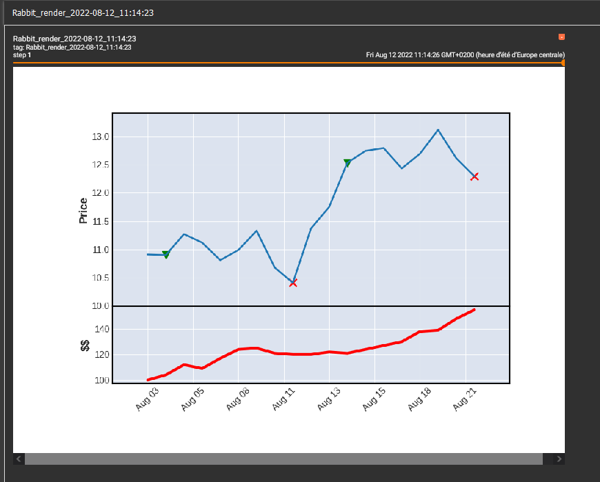

Welcome to 8mile-render’s documentation!¶
8mile allow users to renderer time series data and especially financial ones.
Example¶
Use a RabbitRenderer to print time series in tensorboard :
from datetime import datetime
import pandas as pd
from Hmilerender.RabbitRenderer import RabbitRenderer
def fill_renderer(data, renderer):
# we fill the renderer with data rows
for index, row in data.iterrows():
date = datetime.strptime(row["Date"], "%Y-%m-%d")
renderer.append("open", row["open"], date)
renderer.append("close", row["close"], date)
renderer.append("high", row["high"], date)
renderer.append("low", row["low"], date)
renderer.append("volume", row["volume"], date)
renderer.append("exit", row["exit"], date)
renderer.append("long", row["long"], date)
renderer.append("short", row["short"], date)
renderer.append("money", row["money"], date)
# we create a renderer object
renderer = RabbitRenderer('logs/')
# we read data
data = pd.read_csv('data/data.csv')
# we fill renderer
fill_renderer(data, renderer)
# we launch renderer
renderer.render()
# then we increment tensorboard step
renderer.next_step()
# we refill the renderer
fill_renderer(data, renderer)
# we launch renderer
renderer.render()
Result in tensorboard :
{kind=link}
Implemented Renderer¶
-
class
Hmilerender.RabbitRenderer.RabbitRenderer(logdir, name='Rabbit_render', tags=['rabbit'], activate_volume=False, date_in_name=True)¶ Render in tensorboard
-
append(column_name: str, value: object, date: datetime.datetime = None) → None¶ Append a value to a column
- Args:
- column_name (str): column to select value (object): value to append date (datetime, optional): date for value. Defaults to None.
- Raises:
- ColumnNameDoesNotExists: raised if column_name does not exists in renderer
-
init_columns()¶ Initialize column as empty pd.Series
-
next_step()¶ Increment the tensorboard step data and reinitialize all column’s data
-
render()¶ Launch the rendering of all appended data
-
render_func(render_params: dict)¶ Implement here the rendering method. This method should not be called. Use render method
- Args:
- render_params (dict): parameters that should be passed to the thread
- Raises:
- NotImplemented: the function should be implemented
-
Core classes¶
-
class
Hmilerender.Renderer.Renderer(data_column_names: list, threaded=True)¶ Abstract class to guide the construction of a Renderer. To renderer multi-column, time series data.
-
append(column_name: str, value: object, date: datetime.datetime = None) → None¶ Append a value to a column
- Args:
- column_name (str): column to select value (object): value to append date (datetime, optional): date for value. Defaults to None.
- Raises:
- ColumnNameDoesNotExists: raised if column_name does not exists in renderer
-
init_columns()¶ Initialize column as empty pd.Series
-
render()¶ Launch the rendering of all appended data
-
render_func(render_params: dict) → None¶ Implement here the rendering method. This method should not be called. Use render method
- Args:
- render_params (dict): parameters that should be passed to the thread
- Raises:
- NotImplemented: the function should be implemented
-
-
class
Hmilerender.Renderer.RenderTask(func, render_params)¶ Render in a Thread
-
daemon¶ A boolean value indicating whether this thread is a daemon thread.
This must be set before start() is called, otherwise RuntimeError is raised. Its initial value is inherited from the creating thread; the main thread is not a daemon thread and therefore all threads created in the main thread default to daemon = False.
The entire Python program exits when no alive non-daemon threads are left.
-
ident¶ Thread identifier of this thread or None if it has not been started.
This is a nonzero integer. See the get_ident() function. Thread identifiers may be recycled when a thread exits and another thread is created. The identifier is available even after the thread has exited.
-
isAlive()¶ Return whether the thread is alive.
This method is deprecated, use is_alive() instead.
-
is_alive()¶ Return whether the thread is alive.
This method returns True just before the run() method starts until just after the run() method terminates. The module function enumerate() returns a list of all alive threads.
-
join(timeout=None)¶ Wait until the thread terminates.
This blocks the calling thread until the thread whose join() method is called terminates – either normally or through an unhandled exception or until the optional timeout occurs.
When the timeout argument is present and not None, it should be a floating point number specifying a timeout for the operation in seconds (or fractions thereof). As join() always returns None, you must call is_alive() after join() to decide whether a timeout happened – if the thread is still alive, the join() call timed out.
When the timeout argument is not present or None, the operation will block until the thread terminates.
A thread can be join()ed many times.
join() raises a RuntimeError if an attempt is made to join the current thread as that would cause a deadlock. It is also an error to join() a thread before it has been started and attempts to do so raises the same exception.
-
name¶ A string used for identification purposes only.
It has no semantics. Multiple threads may be given the same name. The initial name is set by the constructor.
-
run()¶ Method representing the thread’s activity.
You may override this method in a subclass. The standard run() method invokes the callable object passed to the object’s constructor as the target argument, if any, with sequential and keyword arguments taken from the args and kwargs arguments, respectively.
-
start()¶ Start the thread’s activity.
It must be called at most once per thread object. It arranges for the object’s run() method to be invoked in a separate thread of control.
This method will raise a RuntimeError if called more than once on the same thread object.
-